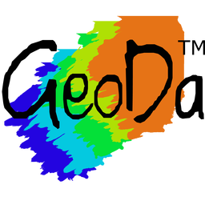

Ethan Crawford
Translating spatial data into compelling narratives and functional urban solutions. Experienced in both physical cartography and interactive web mapping.
Technical Skillset

GeoDa Survey123
Survey123
Experience & Education
University of Illinois Urbana-Champaign
B.S. Geography & GIS — GIS Concentration
Minors in Urban & Regional Planning and Global Labor Studies
UIUC School of Labor & Employment Relations
Independent Researcher (Faculty-Advised)
Designing a large-scale ArcGIS StoryMap documenting the political economy of the Agricultural Workers Organization (AWO) during its 1915–1917 organizing campaign across the American Midwest. Integrating 1910 and 1920 U.S. Census demographic and occupational data to spatially map labor migration patterns, population distribution, and economic conditions shaping early farm worker organizing. Synthesizing archival and quantitative sources into a unified geospatial narrative, applying census data normalization and attribute management across multi-decade datasets.
UIUC Department of Urban & Regional Planning
Research Assistant
Edited and maintained GIS datasets in ArcGIS Pro to reflect climate vulnerability and infrastructure response data for the 2022 Pakistan floods, applying QA/QC techniques to ensure spatial accuracy and data integrity. Developed and queried spatial databases to support analysis of disaster impact across the Balochistan region. Produced ArcGIS StoryMaps and web-based map deliverables to communicate findings to non-specialist audiences. Collaborated with faculty and international researchers to reconcile conflicting data sources and standardize dataset structure across project phases.
The University YMCA of Illinois at Urbana-Champaign
Resource Development Fellow – Build Team | website
Designed structured toolkits and resource guides in Figma and Adobe InDesign, managing version control and iterative updates across a multi-person team. Deployed and maintained content through Webflow, coordinating publishing schedules and troubleshooting platform issues to ensure consistent availability.
WPGU Radio Station
Radio Show Host
Hosted a live weekly program and coordinated with station staff on scheduling and operations, demonstrating reliable communication and cross-team collaboration over an 18-month tenure.